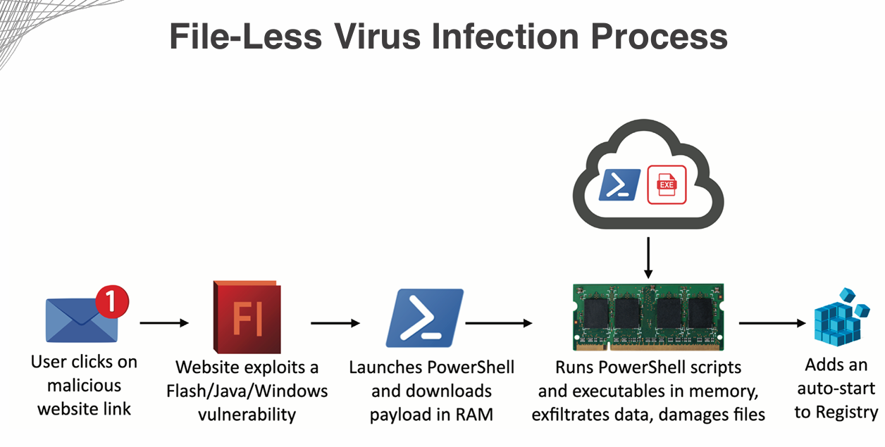
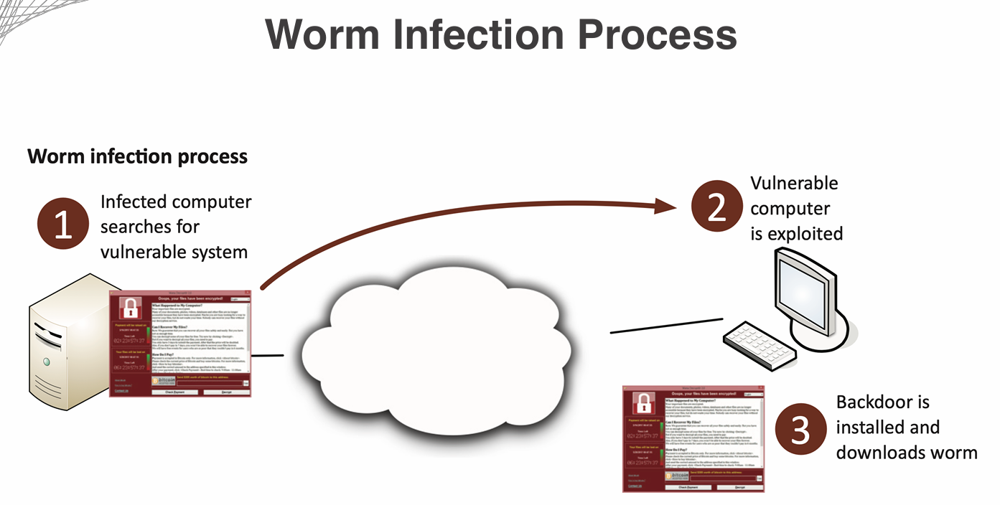

Date Taken: Fall 2025
Status: Work in Progress
Reference: LSU Professor Joseph Khoury, ChatGBT
Malware, short for malicious software, refers to any software intentionally designed to cause damage to a computer, server, client, or computer network. Malware can take many forms, including viruses, worms, Trojans, ransomware, spyware, adware, and more. It can disrupt system operations, steal sensitive information, or gain unauthorized access to networks.
Malware is classifies into two broad categories:
Base first on how it spreads or propogates to reach desired targets, and second on the actions or payloads it performs once it reaches a target system. Also classified by how it infects files:
Propagation Mechanisms include: Infection of existing content by viruses that is subsequently spread to other systems, use of worms to exploit vulnerabilities in network protocols to spread themselves, and Trojans that trick users into installing them.
Payload actions performed by malware once it reaches a target systm can include: Corruption or destruction of data, theft of sensitive information, installation of backdoors for future access, and use of the infected system to launch attacks on other systems.
Viruses and worms are two common types of malware that can cause significant damage to computer systems and networks.
A Virus is a type of malware that attaches itself to a legitimate program or file and spreads when the infected program or file is executed.
Viruses can be spread through email attachments, infected software downloads, and other means. Once a virus infects a system, it can cause a range of problems, including data corruption, system crashes, and unauthorized access to sensitive information.
Virus Types include: Program viruses, Boot sector viruses, Script viruses, Macro viruses.
File less Virus: A type of virus that is good at hiding from traditional antivirus software by operating in memory rather than writing itself to disk. They operate in memory, making them harder to detect and remove. They also never installed in files, making them more difficult to identify using traditional file-based scanning methods.

A Worm is a standalone malware that can replicate itself and spread to other systems without the need for a host program or file.
Worms typically exploit vulnerabilities in network protocols to spread themselves, and can quickly infect large numbers of systems.
Once a worm infects a system, it can cause similar problems as viruses, including data corruption, system crashes, and unauthorized access to sensitive information.
Worm Types include: Email worms, Internet worms, Instant messaging worms, File-sharing worms.
Firewalls and IDS/IPS can mitigate many worm infestations by blocking malicious traffic and detecting suspicious activity. But it won't help much once the worm has already infected a system.

Spyware is a type of malware that is designed to secretly monitor and collect information about a user's online activities without their knowledge or consent.
Spyware can be installed on a user's computer through various means, such as email attachments, infected software downloads, or by exploiting vulnerabilities in web browsers or operating systems.
Once installed, spyware can track a user's browsing history, keystrokes, and other sensitive information, such as login credentials and credit card numbers.
Spyware can also slow down a user's computer and cause other performance issues.
Types of Spyware include: Adware, System Monitors, Trojans, Tracking Cookies, Browser Hijackers.
Bloatware, also known as crapware or junkware, refers to software that comes pre-installed on a new computer or device that is often unnecessary and takes up valuable storage space and system resources.
Bloatware can include trial versions of software, games, toolbars, and other applications that the user may not want or need.
Bloatware can slow down a computer's performance, cause system crashes, and create security vulnerabilities.
Some bloatware may also collect user data without their knowledge or consent.
Examples of Bloatware include: Trial versions of antivirus software, pre-installed games, toolbars, and other applications that the user may not want or need.
A keylogger is a type of surveillance software that records every keystroke made on a computer or mobile device.
Keyloggers can be used for legitimate purposes, such as monitoring employee activity or parental control, but they are often used maliciously to steal sensitive information, such as passwords and credit card numbers.
Keyloggers can be installed on a device through various means, such as email attachments, infected software downloads, or by exploiting vulnerabilities in web browsers or operating systems.
Once installed, keyloggers can run in the background without the user's knowledge, making them difficult to detect.
Types of Keyloggers include: Software keyloggers, Hardware keyloggers, Wireless keyloggers, Kernel-level keyloggers.
A logic bomb is a piece of malicious code that is triggered by a specific event or condition, such as a certain date or the presence of a particular file.
Logic bombs can be used to delete files, corrupt data, or perform other harmful actions on a computer or network.
They are often hidden within legitimate software or scripts, making them difficult to detect.
Examples of Logic Bombs include: A script that deletes files if a certain user logs in, or a program that corrupts data if it is not run on a specific date.
A rootkit is a type of malicious software that is designed to gain unauthorized access to a computer or network while hiding its presence.
Rootkits can be used to steal sensitive information, install additional malware, or create backdoors for future access.
They can be difficult to detect and remove because they often operate at a low level within the operating system.
Types of Rootkits include: User-mode rootkits, Kernel-mode rootkits, Firmware rootkits, Virtualized rootkits.
Finding and removing rootkits can be challenging, as they are designed to evade detection by traditional security measures. Looking for unusual system behavior, such as unexpected network activity or changes to system files, can help identify the presence of a rootkit. Specialized rootkit detection and removal tools may also be necessary to fully eliminate the threat. In some cases, a complete system reinstall may be the only way to ensure that a rootkit has been fully removed. Secure boot with UEFI (Unified Extensible Firmware Interface) can help prevent rootkits from being installed by ensuring that only trusted software is allowed to run during the boot process. Security in the BIOS (Basic Input/Output System) can also help protect against rootkits by preventing unauthorized changes to system settings.